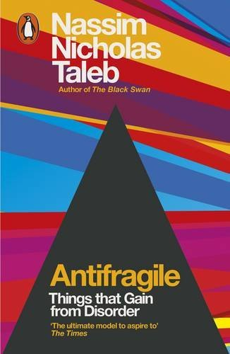
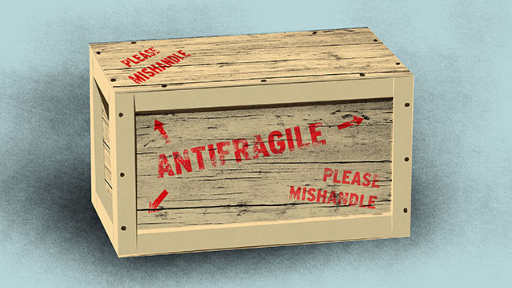
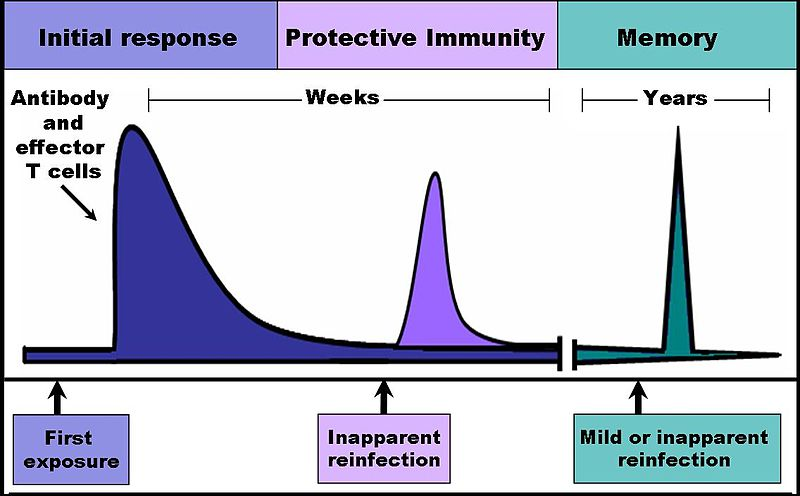
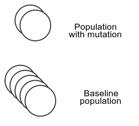
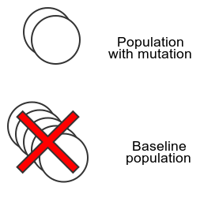
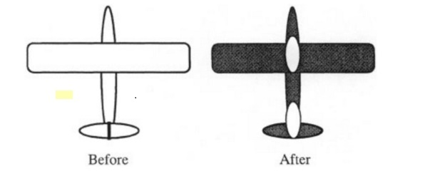
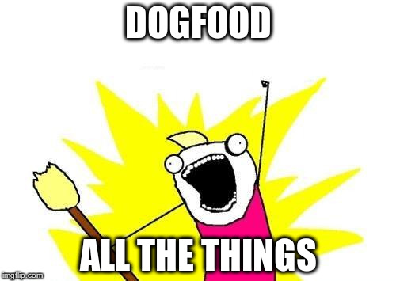

Your feedback is in another castle
Antifragility and feedback loops in the IT industry
Maximilien Riehl / max@flatmap.ninja / @maximilienriehl / github.com/mriehl
Flight plan
- Antifragility is a desirable property
- We can't have it unless we change a lot
- We need more DevOps-ish culture
A primer on antifragility

Black swan events
- Surprise / Outlier
- Major effect and consequences
- Unpredictable unless in hindsight
The fragile vs. black swan event
- Best case: crate remains unchanged
- Worst case: crate has defects
The antifragile vs. black swan event
- Worst case: crate remains unchanged
- Best case: crate improves
Illustration by Tara Jacoby
Immune system vs black swan events
Image credit: DO11.10, GFDL
Thus, limitations
- Harm's only good up to a certain point
- Antifragility is an emergent effect
Emergent effects in software - example

auto output_mat = output->flat_outer_dims<T>();
Antifragile system: evolution


Key insights
- The antifragile slowly adapts to black swan events
- Relies on tinkering (mutation)
- Pieces from the system must be fragile
Antifragility and feedback
This is a feedback loop!
The problem with feedback
We should go to war!
The blindfolded immortal bus driver problem
- No problem finding a new job
- No personal risk
- No financial downside
Why would you learn from that experience?
Feedback models (ethics)
No skin in the game
Your bad decisions lead to other people's harm
Skin in the game
Your bad decisions lead to your own harm
Soul in the game
Your bad decisions for the sake of others lead to your own harm
The IT industry at large: no skin in the game
"Data-driven" not ideal
» curl -s https://en.wikipedia.org/wiki/List_of_cognitive_biases \
| grep '<td><b><a href="/wiki/' | wc -l
154
How accurate is data...
when there is strong incentive to make it look better?
Armor plating engineer

If Google (survivor) does X, then X is good for me too?
© Howard Wainer, Lawrence Erlbaum, 1977
Cargo cults
We pick up the visible things (tools) but fail to examine the role they play.
Reproducibility in 1935
Paper 1: X ➡ Rats do A
Paper 2: Z ➡ Rats do A
Professor: Nope, X was already done.
Dijkstra's logical firewall
We should erect a firewall to separate
- the correctness problem (does it conform to the spec)
- from the pleasantness problem (do we want the spec)
Isolating product from development still sounds like a good idea?
Rainmaker scam
- Did "DevOps" solve your problems?
- Or did "wanting to implement DevOps" solve your problems?
- Maybe something else solved your problems...
Issues holding us back
- Bad/no reproducibility
- Cargo cult-ure
- Separation of product and development
- No or indirect harm due to bad decisions
Ideas, questions
Eat your own dog food
Get some skin in the game!
Rate fragility, not probability
Optionality FTW
Mistrust data by default
Don't be the turkey
Questions for the audience
How do you deal with reproducibility
- Cultural?
- Technical?
Do you have skin in the game?
Thanks!
Any questions?